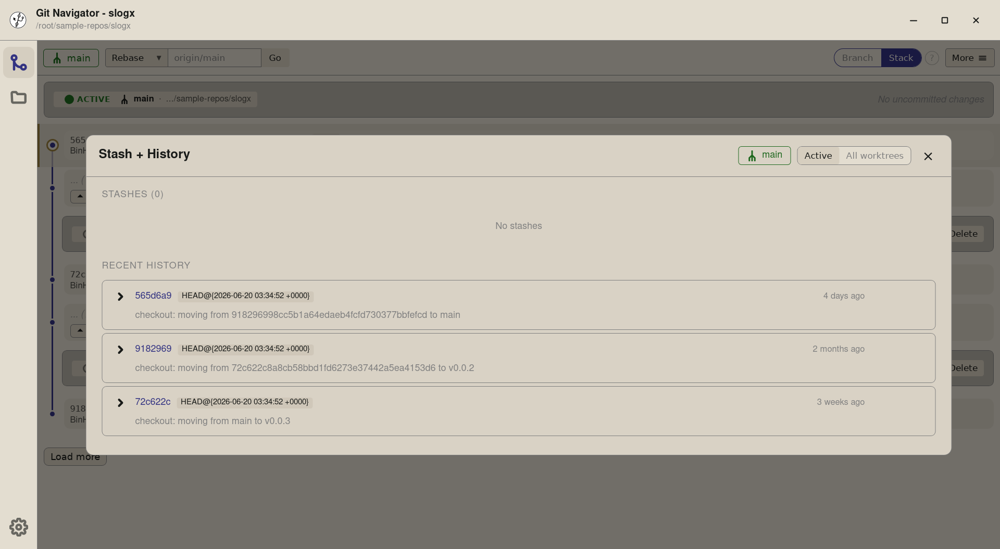
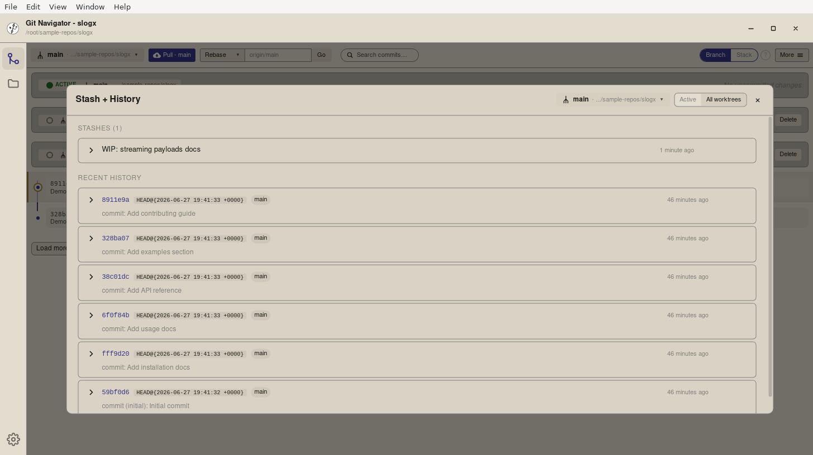
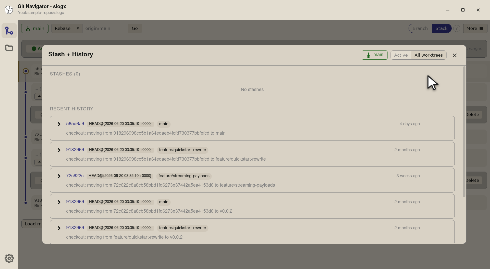
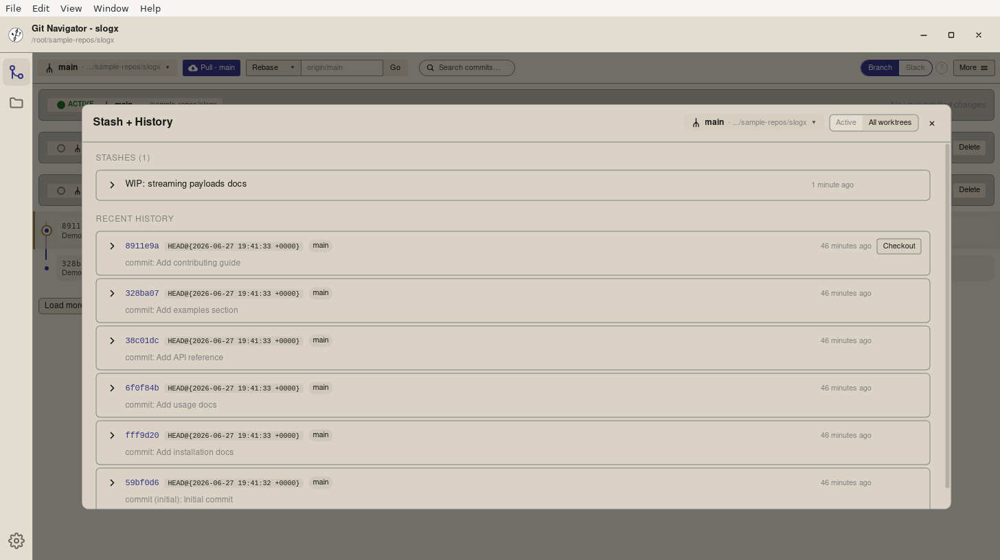
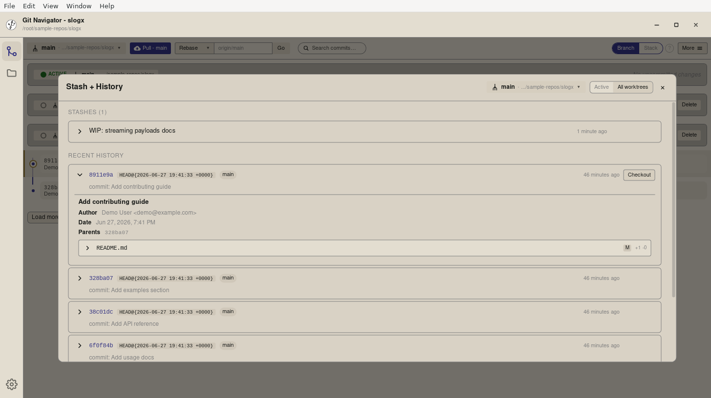
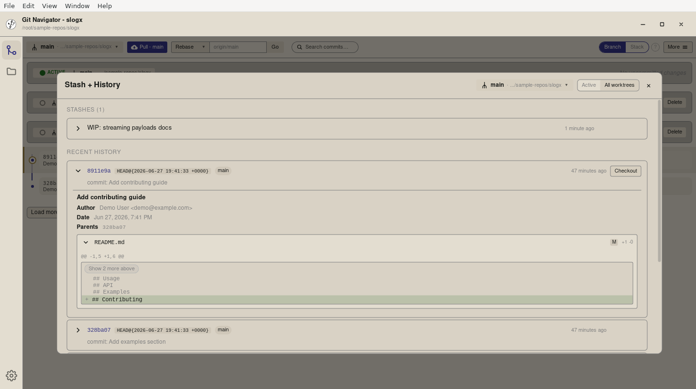

Reflog — scoped how you want it, expanded when you need it
The reflog is your safety net for everything Git history pretends never happened. Git Navigator puts it in the same Stash + History overlay as the rest of your repo movement, scoped to the active worktree by default, expandable to every worktree with one toggle, and inline-expandable to a diff per entry.

Reflog without the command-line
Scoped to the active worktree by default
Most of the time you only want the reflog for the checkout you're looking at. The default scope keeps the list focused; the toggle is one click away when you actually need everything.
All-worktrees view with source badges
Flip the scope to All worktrees and the same list grows a per-row source badge so you can tell which worktree each entry came from. Useful when you're hunting "where did that commit go?" across multiple checkouts.
Expand inline for the diff
Every reflog row carries an expand chevron. Open it and you get the commit metadata plus the per-file diff — no separate page, no git show in another window. Close it when you're done; the rest of the overlay stays put.
Checkout direct from a row
Each row has a Checkout button that moves HEAD straight to that commit on the active worktree, so reflog acts as a one-click time machine when you need to recover from a misstep.
Walkthrough
-
Step 1. Open More → Stash + History and the Recent History section lists the active worktree's reflog. Default scope is Active worktree — every row is a HEAD movement on the currently-active checkout (the slogx main worktree here). -
Step 2. The scope toggle at the top of the section is a two-button tab strip — Active worktree on the left, All worktrees on the right. The active state is what you see; click the other to switch. -
Step 3. Each row carries the commit hash, the reflog action(s) — HEAD@{0},HEAD@{1}, … — the reflog message, the date, and a Checkout button that moves HEAD straight back to that commit.
-

Step 1. The right tab on the scope toggle says All worktrees. Switching to it lets you see every linked worktree's reflog in the same list — useful when a commit has gone missing and you're not sure which checkout did the last thing to it. -

Step 2. The list re-renders to merge every worktree's reflog into one chronological view. The slogx-streaming and slogx-quickstart linked worktrees contribute their own HEAD-movement entries from when they were checked out. -

Step 3. Each row now carries a small badge naming the worktree it came from — so the merged list stays readable and you can scan for "where did this happen" by source rather than by date.
-

Step 1. Every reflog row has a chevron at the left. Click it and the row expands inline — no jump to a separate view. The commit metadata loads first, then the file list. -

Step 2. The expanded panel shows the commit's author, date, parents, and full message at the top, then a list of the files the commit touched. Each file is itself expandable into the per-file diff. -

Step 3. Each file in the panel is itself an expandable row — click any of them and the diff for that file loads in place, using the same hunk display the rest of the app uses. -

Step 4. The per-file diff renders inline in the row, so the reflog overlay is now a one-stop shop: scope toggle at the top, commit metadata in the middle, the actual diff at the bottom. Close the row to collapse everything; the Checkout button on the entry stays one click away if you decide you want HEAD back at that commit.


Reading the reflog in Git Navigator
- Open Stash + History. More → Stash + History. The same overlay holds both the stash list and the Recent History section that drives reflog.
- Pick a scope. Default scope is the active worktree. Flip the tab strip to All worktrees to merge every linked worktree's reflog into one chronological list, with per-row source badges.
- Expand for the diff. Every row has an expand chevron. Click it to load the commit metadata and the file list inline; click any file to load its diff in place.
- Checkout to time-travel back. Each row carries a Checkout button. Click it and HEAD on the active worktree moves to that commit — your safety net when something disappeared from history.
Frequently asked questions
How is this different from git reflog on the command line?
git reflog prints text. Git Navigator renders the same list as expandable rows: per-row commit metadata, per-file diffs, a Checkout button to move HEAD directly. The scope toggle also makes "show every worktree at once" one click rather than per-worktree git -C path reflog invocations.
Why is the default scope just the active worktree?
Because that's usually the only reflog you care about — the worktree you're looking at. The All worktrees view is the right tool for the rarer hunt for "where did a commit go" across multiple linked checkouts, but in the common case the active-only scope keeps the list short.
What does the inline expand actually show?
The first click loads the commit metadata (author, date, parents, message body) and the list of files the commit touched. Each file row is itself expandable into the diff for that file. Everything renders inline — the overlay stays open, the scope toggle stays at the top, and the Checkout button on the row stays one click away.
Can I check out a commit from a reflog entry?
Yes. Each row carries a Checkout button that moves HEAD on the active worktree to that commit. The graph re-renders around the new HEAD, and the reflog grows a new entry recording the checkout — so the time machine has a return ticket.
Does the reflog see commits from worktrees that have been removed?
Yes, while their reflog files exist. Git keeps each worktree's reflog under .git/worktrees/<name>/logs/HEAD; deleting the worktree removes the file, but until then the All worktrees view picks it up so you can recover work from a worktree you're about to delete.